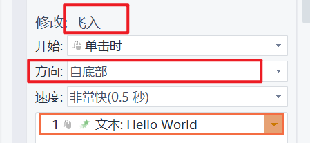

进场动画——InAnimation
InAnimation表示进场动画，也被称为出现动画。
所有AnimationElement的子类都拥有进场和出场动画属性。
private InAnimation inAnimation;
您可以通过Set或者Get方法对此内容进行修改或读取
默认值为null，即没有动画。
以下是InAnimation包含的属性：
showAnimationType 展示时间
private ShowAnimationType showAnimationType = ShowAnimationType.SAME_TIME;
这个属性设置的是动画出现时间，允许的枚举值有以下三种：
ShowAnimationType.SAME_TIME同时出现（默认）ShowAnimationType.CLICK单击出现ShowAnimationType.AFTER在上一动画完成后出现
inAnimationType 入场动画效果
private InAnimationType inAnimationType;
默认是null
如果您不希望有动画请不要在这里设置成null，而是直接把文档开头提到的inAnimation设置为null
属性是一个枚举类，目前支持以下效果：
InAnimationType.BLINDS,//百叶窗
InAnimationType.WIPE,//擦除
InAnimationType.WHEEL,//轮子
InAnimationType.SPLITTING,//劈裂
InAnimationType.BOARD,//棋盘
InAnimationType.LINE,//随机线条
InAnimationType.ZOOM//缩放
InAnimationType 枚举类中包含了中文名称和默认持续时间，可以供您参考。
不在以上列表中的样式不建议使用
animationAttribute 属性信息
private AnimationAttribute animationAttribute;
属性信息，是枚举类，在一些动画效果中允许出现一些属性，您可以根据需要进行设定
但请务必保证您设置的属性是这个动作中允许被设置的，如果您设置了一个不属于此动作的属性将会自动恢复为默认。
动画效果和属性对应关系可以参考WPS或Office里面的动画设置窗口

timeMs 持续时长毫秒
private Integer timeMs;
持续时长，单位是毫秒。每一个动画都包含默认持续时长。默认持续时长和Office中此动作的默认持续时长是一致的，如果想和Office保持一致的话一般不需要填写。
在Office或者WPS等阅读器中，设定为以下毫秒时长会展示为指定的语义文本。推荐您从以下的数值中选择：
| 时长 | 标识 |
|---|---|
| 500 | 非常快 |
| 1000 | 快速 |
| 2000 | 中速 |
| 3000 | 慢速 |
| 5000 | 非常慢 |